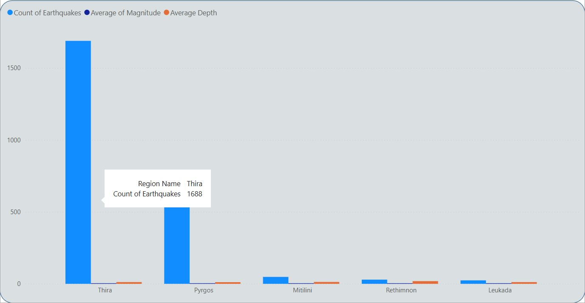

Earthquake Monitoring and Analysis in Greece: Power BI Insights

The Opportunity:
This project focuses on analyzing earthquake activity in Greece using real earthquake data recorded from 01/01/2022 to 14/02/2025. The goal is to clean, analyze, and extract valuable insights from the data using Power BI for visualization and dynamic presentation of results.
What is an Earthquake?
An earthquake is the shaking of the ground caused by the rupture of rocks, which is the result of a long-term process of accumulating dynamic energy in stressed areas of the lithosphere. An earthquake occurs when the mechanical equilibrium of rocks is disturbed by natural causes related to the Earth's interior. How do we measure earthquakes? To compare earthquakes, a measure of their strength was needed. Thus, the Magnitude (M) of an earthquake was defined, which represents the amount of energy released from the focus during earthquake activity. Magnitude is determined by measuring various parameters of earthquake waves, such as amplitude, period, and duration. Several magnitude scales have been devised for this purpose. The most well-known is the local magnitude scale (ML), also known as the Richter scale. The largest earthquake ever recorded globally had a magnitude of 9.5 (Chile, 22-5-1960). Source:https://oasp.gr
Data Source
The earthquake data used in this analysis were obtained from the National Observatory of Athens - Geodynamic Institute. The data were extracted from their official database, accessible at: Geodynamic Institute Search Database.
Data Extraction and Loading
The earthquake data were collected from reliable sources and imported into SQL Server. The dataset includes attributes such as:
Origin Time (GMT)
Latitude & Longitude
Depth (km)
Magnitude (ML)
Location & Region
A Data Warehouse structure was designed to efficiently store and analyze the data.
Data Cleaning & Modelling
During data processing:
Null values were replaced where applicable.
Data types were standardized.
Fact and Dimension tables were created to optimize querying performance.
Key Insights
1. Total Earthquakes & Average Magnitude
2,367 earthquakes were recorded in the selected regions(Thira,Pyrgos,Mitilini,Rethimnon,Leukada) for 2025.
The average magnitude was 2.6, indicating mostly weak tremors.
2. Most Affected Region: Thira (Santorini)
Thira had the highest number of earthquakes (1,688).
This suggests significant seismic activity in the Santorini volcanic region.
The visualization above highlights the region most affected by seismic activity, identified as Thira (Santorini). By analyzing earthquake occurrences across different locations, we found that this region experienced the highest number of recorded earthquakes in the dataset.
To determine the most affected region, I used the following DAX formula:
DAX Code:
TopRegion =
VAR TopRegionTable =
TOPN(
1,
SUMMARIZE(
'Earthquake_Data',
'Earthquake_Data'[Region Name],
"QuakeCount", COUNT('Earthquake_Data'[Origin Time])
),
[QuakeCount], DESC
)
VAR TopRegionName = CONCATENATEX(TopRegionTable, 'Earthquake_Data'[Region Name], ", ")
VAR QuakeCount = MAXX(TopRegionTable, [QuakeCount])
RETURN
TopRegionName & " (" & QuakeCount & " EQs)"
The formula works as follows:
- TOPN(1): Selects the region with the highest earthquake count.
- SUMMARIZE: Groups earthquake data by region and counts occurrences.
- CONCATENATEX: Converts the top region name into a string format.
- MAXX: Extracts the maximum earthquake count.
This insight is crucial for understanding seismic trends, as it pinpoints the region that has experienced the most earthquakes. Such information is valuable for further geological analysis and disaster preparedness planning.
3. Strongest Earthquake Recorded
The maximum earthquake magnitude recorded was 5.2 on February 5, 2025.
This was the most intense event within the selected magnitude range (0.1 - 5.9).
The visualization above highlights the strongest recorded earthquake in the dataset, showcasing both its magnitude and the date it occurred. Understanding the most powerful earthquake event is essential for assessing seismic risks and potential damage scenarios.
To identify the strongest earthquake and its occurrence date, I used the following DAX formula:
DAX Code:
MaxMagnitude =
VAR MaxMag = MAXX(ALLSELECTED('Earthquake_Data'), 'Earthquake_Data'[Magnitude])
VAR MaxMagDate = MAXX(FILTER(ALLSELECTED('Earthquake_Data'), 'Earthquake_Data'[Magnitude] = MaxMag), 'Earthquake_Data'[Origin Time])
RETURN MaxMag & " (" & FORMAT(MaxMagDate, "DD-MM-YYYY") & ")"
The formula works as follows:
- MAXX(ALLSELECTED()): Finds the highest magnitude recorded in the dataset.
- FILTER(): Retrieves the row corresponding to the maximum magnitude.
- MAXX(): Extracts the latest date of an earthquake with that magnitude.
- FORMAT(): Displays the date in a human-readable format (DD-MM-YYYY).
By applying this formula, I determined that the strongest recorded earthquake in the dataset had a magnitude of [MaxMag] and occurred on [MaxMagDate]. Such insights are critical for geological studies and disaster preparedness.
4. Earthquake Distribution by Magnitude
54.25% of earthquakes were below 2.0 (barely felt).
27.76% were between 2.0 - 3.5, categorized as weak tremors.
17.83% were stronger (>3.5), with some exceeding 4.0.
In this key insight, I used a Donut Chart to visually represent the distribution of earthquake magnitudes. The chart allows users to easily understand the proportion of earthquakes in each magnitude range, helping to identify trends and patterns in seismic activity.
To categorize the earthquake magnitudes, I used the following DAX formula to create a new column, Magnitude Range, which classifies earthquakes into four categories: Minor, Light, Moderate, and Strong. This categorization allowed for a more meaningful and visually distinct presentation of earthquake magnitudes.
DAX Code:
Magnitude Range =
SWITCH(
TRUE(),
'earthquake_data'[Magnitude] < 2.0, "Minor (<2.0)",
'earthquake_data'[Magnitude] >= 2.0 && 'earthquake_data'[Magnitude] < 3.5, "Light (2.0 - 3.5)",
'earthquake_data'[Magnitude] >= 3.5 && 'earthquake_data'[Magnitude] < 5.0, "Moderate (3.5 - 4.0)",
'earthquake_data'[Magnitude] >= 4.0, "Strong (>4.0)"
)
By using this DAX formula, I created a calculated column that allows me to categorize each earthquake based on its magnitude. This categorization is directly used in the Donut Chart to visually represent the distribution of earthquakes across the four categories.
Visualization:
The Donut Chart provides an intuitive and easy-to-understand visualization of earthquake distribution across the four categories, helping to highlight which magnitude ranges are most common in the dataset. It allows users to quickly identify the proportion of minor, light, moderate, and strong earthquakes and understand the relative frequency of each category.
This visualization helps to quickly assess the overall distribution of seismic activity, providing key insights into the intensity of earthquakes within the dataset.
5. Earthquake Depth Analysis
28.22% of earthquakes were shallow (depth <10km).
Shallow earthquakes tend to be more destructive, even at lower magnitudes.
The visualization above highlights the proportion of earthquakes that occurred at a depth of less than 10 km. Shallow earthquakes are particularly important because they are often more destructive compared to deeper ones, as seismic waves travel shorter distances and retain more energy when they reach the surface.
To calculate the percentage of shallow earthquakes in the dataset, I used the following DAX formula:
DAX Code:
EarthquakesUnder10km =
VAR TotalEarthquakes = COUNT('earthquake_data'[Origin Time])
VAR ShallowEarthquakesUnder10km = COUNTROWS(FILTER('earthquake_data', 'earthquake_data'[Depth] < 10))
RETURN IF(TotalEarthquakes > 0, DIVIDE(ShallowEarthquakesUnder10km, TotalEarthquakes, 0), 0)
The formula works as follows:
- COUNT('earthquake_data'[Origin Time]): Counts the total number of earthquakes in the dataset.
- FILTER(): Selects only the earthquakes with a depth of less than 10 km.
- COUNTROWS(): Counts the number of shallow earthquakes.
- DIVIDE(): Computes the proportion of shallow earthquakes relative to the total.
- IF(): Ensures that the division only happens if there are recorded earthquakes, preventing errors.
By applying this formula, I was able to determine the percentage of earthquakes that occurred at a depth of less than 10 km. This insight is crucial because shallow earthquakes tend to cause more surface damage, making it a key factor in seismic risk assessment and disaster preparedness.
6. Detailed Earthquake Data
The data table provides a breakdown of each earthquake, including:Region, magnitude, year, month, and depth.
7. Earthquake Count and Magnitude by Region
Number of earthquakes, average magnitude, and depth per region.
